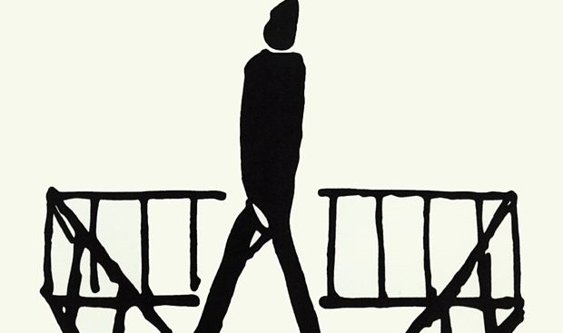

"¡Yo te condeno a morir ahogado!"
Fragmento de la obraSINOPSIS
*La Condena* es un relato breve de Franz Kafka que presenta el conflicto entre un padre autoritario y su hijo, Georg Bendemann. Tras escribir una carta a un amigo distante, Georg se enfrenta a una discusión con su padre, quien lo acusa de traición y egoísmo, culminando con una sentencia irracional: la condena a la muerte. La obra explora la culpa, el poder paterno y la destrucción psicológica del protagonista.